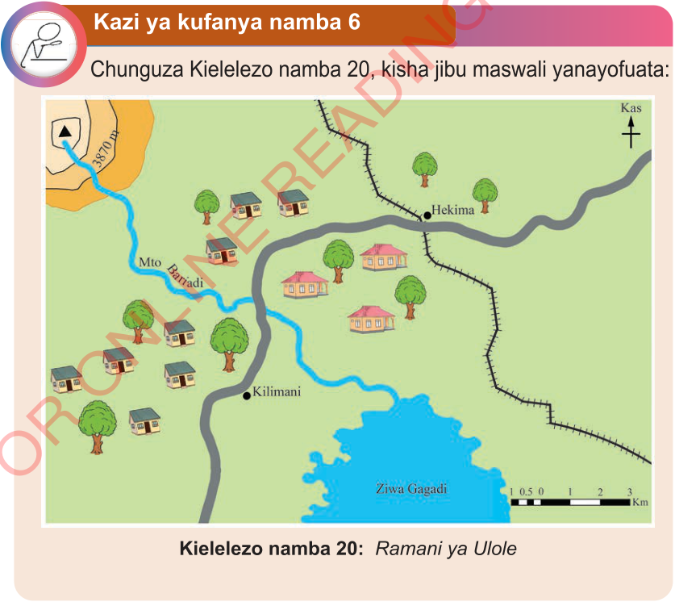

(e) Jumlisha umbali uliopima kupata umbali kamili kutoka kituo A hadi B; na
(f) Badili umbali uliopatikana kuwa umbali halisi katika ardhi kwa kutumia skeli ya uwakilishi wa sehemu (uwiano) kama ilivyofanyika katika upimaji wa umbali wa mstari ulionyooka kwa kutumia kipande cha karatasi. Kwa mfano, ikiwa umbali wa ramani wa jumla ulipatikana katika hatua (d) ni sentimeta 14, na skeli ya uwiano ni 1:50000, basi umbali halisi wa ardhi kutoka kituo A hadi B utakuwa ni sawa na kilometa 7.
